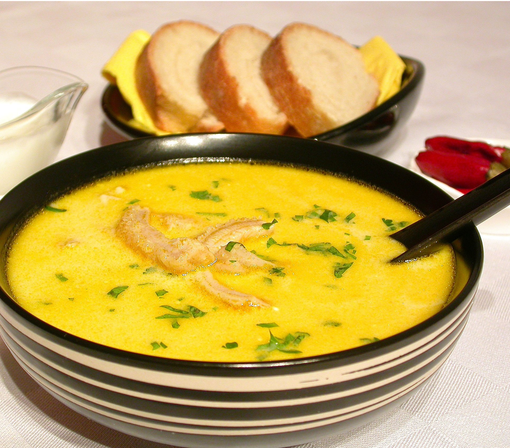

Exercise Course 3: Preparing Ciorba de Burta
First, The Image

Then, the link
Here's the original page
Now we can go with the ingredients:
- 1.5 kg fresh beef belly
- 2 beef knees with tendons
- 3-4 medium carrots
- 3-4 thin slices of celery
- 1 parsley root
- 3-4 cloves of garlic
- 200 g of heavy cream
- 3 fresh yolks
- 5-6 tablespoons of vinegar